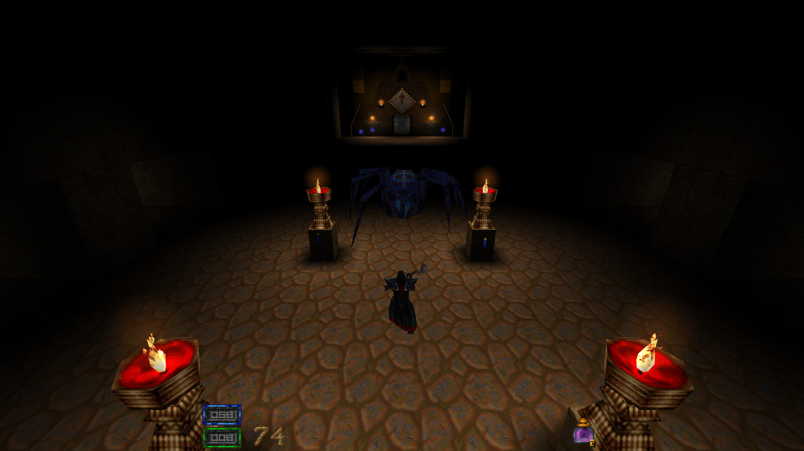

Hexenwail
A GL 4.3 modernization of the Hexen II engine — SDL3 + OpenGL.
Just as Ironwail took QuakeSpasm and modernized its renderer, Hexenwail does the same for Hexen II. It descends from Raven Software's 2000 source release by way of Hammer of Thyrion / uHexen2, rebuilt around a modern SDL3 + OpenGL 4.3 pipeline for 64-bit Linux and Windows.
▶ Play in your browser Download Source on GitHub Report a Bug
Nothing to install — the browser launcher fetches Raven's free 1997 three-level
demo, or imports your own data1. Plays offline after the first load.

Which version should I use?
Three living branches of the Hexen II engine, depending on what you want to play:
- Vanilla & upstream maintenance —
Hammer of Thyrion / uHexen2, sezero's
masterbranch. The reference cross-platform engine: most faithful to the original release, and the best base for general play and ongoing portability work. - Classic community mods (Shanjaq era) —
Shanjaq's fork through its final
uhexen2-r6303.zipbuild. Many mods in the active Hexen II Discord were built and tested against this engine, so it remains the safest choice for that catalog of content. - Steam Deck & modern systems — Hexenwail (this project). A GL 4.3 / SDL3 modernization with gamepad support, render scaling, display presets, and Flatpak packaging, aimed at current hardware while staying mod-compatible.
What's in it
Rendering
- Full GLSL 4.30 core pipeline — no immediate mode, no fixed-function
- Reversed-Z depth for precision at distance
- Lightmap atlas, batched world draws, instanced alias models
- MSAA, FXAA, anisotropic filtering
- Render scale (25–100%) and retro dithering
- Display presets: Faithful, Crunchy, Retro, Clean, Modern, Ultra
- HDR tonemap, shader-based fog, underwater warp and caustics
- Interpolated animation decoupled from the 20 Hz physics tick
Input
- WASD + mouselook defaults
- Scancode bindings — works on AZERTY, Dvorak, and friends
- Mouse-driven menus with hover, click, and scroll
- Xbox / PlayStation / Nintendo gamepads with rumble and hot-plug
- Type-to-search key bindings and options menus
Mods
- Runs Wheel of Karma and Storm over Thyrion out of the box
- Protocols 18–21 with auto-detection
- Scrollable Mods menu with per-mod config
- MD3 models and external texture overrides (TGA/PNG/PCX)
- PimpModel entity overrides, extended QuakeC builtins
- Case-insensitive file lookups
Audio
- OGG Vorbis, Opus, MP3, FLAC and WAV music
- Tracker music via libxmp (MOD/S3M/XM/IT)
- MIDI via FluidSynth, or native Windows MIDI
- Per-mod music folders and CD-track remapping
- Underwater low-pass filter, 2048 sound channels
Requirements
Hexenwail ships no game assets. A valid copy of Hexen II is required — available
from GOG. You need
data1/pak0.pak and data1/pak1.pak; add
portals/pak3.pak for Portal of Praevus. To just try it, the
browser build can load the free
1997 demo instead, and the desktop releases ship a fetch helper for the same data.
Any GPU with OpenGL 4.3 (2012 and later) will do. See USAGE.md for external textures, Steam Deck setup, and mod configuration.
Platforms
- 64-bit Linux / SDL3 — OpenGL 4.3 (Nix, Flatpak, tarball)
- 64-bit Windows / SDL3 — OpenGL 4.3 (ZIP, cross-compiled from Nix)
- Browser / WebAssembly — WebGL2, installable as a PWA on desktop, iOS and Android
Flathub and AppImage packaging are planned.
Lineage
Hexen II — Raven Software, published by id Software (1997)
→ engine source open-sourced under the GPL (2000)
→ Anvil of Thyrion Linux port — Dan Olson & Clément Bourdarias
→ Hammer of Thyrion / uHexen2 — O. Sezer (2004–2018, final release 1.5.9)
→ Shanjaq's additions
→ Hexenwail — a full GL 4.3 modernization
Hexenwail began when Storm over Thyrion shipped without a buildable Linux client. The name is Hexen + Ironwail.
Contributing
Bug reports, code cleanup, and documentation are all welcome.
File an issue — the
forms ask for your qconsole.log, GPU, and driver, which is what makes a report
fixable. Building from source needs OpenGL 4.3, SDL3, and a C compiler; see
docs/COMPILE,
or use the Nix flake
for reproducible builds and Windows cross-compilation.